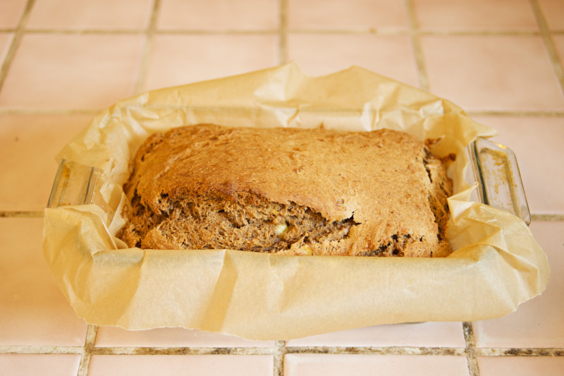

Simple Banana Bread
Description
This Banana Bread recipe is a quick and easy way to use up those overripe bananas sitting around in your kitchen and is simple to make with only a handful of ingredients.
For an easy variation on the standard recipe, you can add cocoa powder, rasins, cinnamon or other additions to make your own custom banana bread.
Ingredients
- 2-3 large ripe bananas, mashed
- 2/3 cup of honey (can substitute molasses or white sugar)
- 1 egg
- 1/3 cup melted butter
- 1 1/2 cups whole-wheat or all-purpose flour
- 1 teaspoon baking soda
- 1 teaspoon salt
Makes one loaf of bread.
Steps
- Preheat oven to 325 degrees F / 165 degree C, grease a 9x5 loaf pan.
- Mix together dry ingredients in a medium mixing-bowl, set aside.
- Beat egg, combine with mashed bananas and honey.
- Create a well in the dry ingredients, mix in wet ingredients with a large spoon.
- Continue to stir until dough begins to form a thick batter, stir in any additional ingredients (ie: raisins, nuts, cinnamon)
- Pour batter into greased loaf pan, leave in the oven for approximately 1 hour.
Bread is done when a butter knife or toothpick inserted into the middle comes out clean.